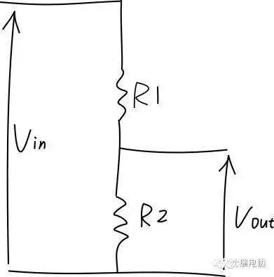
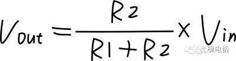

Arduino教程之 -- 感光灯

这个项目中将介绍一个新元件——光敏电阻。从名字可以看出，这个器件是依赖光作用的。在黑暗的环境中，光敏电阻具有非常高阻值的电阻。光线越强，电阻值反而越低。通过读取这个电阻值，就可以检查光线的亮暗了。我们这里选用的是光敏二极管，光敏二极管其实就是光敏电阻中的一种，只是它还具有正负极性。
我们这次做的这个非常好玩，叫做感光灯。它能随着光线明暗而选择是否亮灯。这个光感灯非常适合用做夜晚使用的小夜灯。晚上睡觉的时候，家中灯关掉后，感光灯感觉到周围环境变暗了，就自动亮起。到了白天，天亮后，感光灯就又恢复到关闭的状态了。
所需材料
1× 5mm LED灯
1× 220欧电阻
1× 10k电阻
1× 光敏二极管
1× 手电筒（可选）
STEP 1： 硬件连接
LED灯还是和以往一样的接法。而光敏二极管是有正负极的，和LED一样，也是遵循长脚（+），短脚（-）的原则。还需注意的与光敏二极管相连的电阻是10k，而不是220Ω。
STEP 2：输入代码
完成硬件连接后，打开Arduino IDE,输入下面这段代码。
int LED = 13; //设置LED灯为数字引脚13
int val = 0; //设置模拟引脚0读取光敏二极管的电压值
void setup(){
pinMode(LED,OUTPUT); // LED为输出模式
Serial.begin(9600); // 串口波特率设置为9600
}
void loop(){
val = analogRead(0); // 读取电压值0~1023
Serial.println(val); // 串口查看电压值的变化
if(val<1000){ // 一旦小于设定的值，LED灯关闭
digitalWrite(LED,LOW);
}else{ // 否则LED亮起
digitalWrite(LED,HIGH);
}
delay(10); // 延时10ms
}
复制代码
下载完代码后，LED灯会亮起，这时，你需要拿一个手电筒照你的光敏二极管（用手机后置摄像头的闪光灯应该也可以），这时你会发现LED灯神奇般的自动熄灭。但是，一旦你的手电筒移开，LED灯又再次亮起。
STEP 3：代码回顾
这段代码想必你一定能看的懂了吧？我就简单说一下，可能不明白的地方。
我们之讲LM35温度传感器的时候，也用到了用模拟口读值。强调了，模拟量不需要输入输出模式。这里，也是同样用模拟口用来读取光敏二极管的模拟值。
一旦有光照射，读出的模拟值就会减小，这里设定的上限值是1000。这个值可以按你需要的亮度来选取。选取方法：先把整个装置放在你想让LED关闭的一个环境下，然后打开串口，查看串口显示的值，把这个值替换掉代码中的1000。从串口读值，是调试代码一种很好的方法。
STEP 4：硬件回顾
这里接触了一种新元件——光敏器件。这类器件都是将光信号变成电信号的特殊电子元件。元件内部有特殊的光导材料，外部用塑料或者玻璃封装。光线照射在这类光导材料上时，光敏器件的电阻值就会迅速变小。光敏元件有很多，光敏电阻，光敏二极管，光敏三极管等等。不过原理是差不多的。我们这里选用的是光敏二极管。
光敏二极管其实是光敏电阻中的一种。所谓二极管，就是有正负极的，所以在连线的时候也要注意正负极。
光敏电阻在黑暗的环境中，具有非常高阻值的电阻。光线越强，电阻值反而越低。随着两端电阻值的减小，电压也就相应减小（从模拟口读到的值也就变小，模拟口0~1023的值对应是0~5V的电压值）。
那电压为什么会减小呢？那就要用到我们初中学的物理知识——分压原理。让我们看一个典型的分压电路，看看它是如何工作的。

输入电压Vin（我们这里也就是5V），连在两个电阻上，只测量通过电阻R2的电压Vout，其电压将小于输入电压。计算R2两端的Vout电压公式是：

在我们这里，R1代表的就是10k电阻，R2代表的就是光敏二极管。本来R2在黑暗中，值很大很大，所以Vout也就很大，接近5V。一旦有光线照射的话，R2的值就会迅速减小，所以Vout也就随之减小了，读取的电压值就小。通过上面这个公式可以看出， R1选取不能太小，最好在1k~10k左右，否则比值变化不明显。